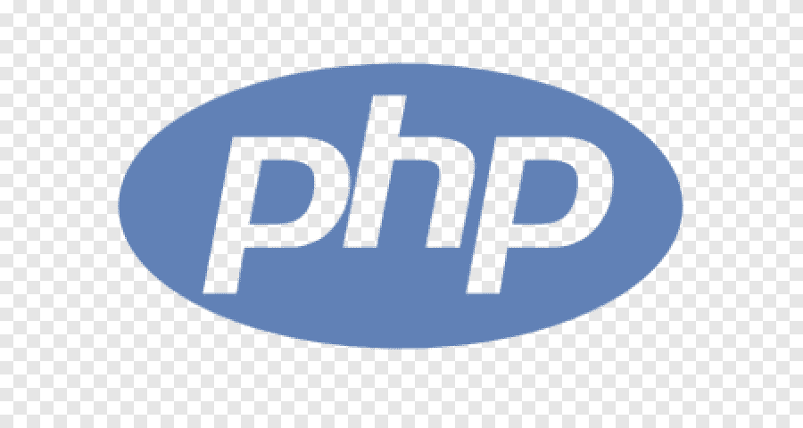

LENGUAJES DE PROGRAMACION.
 |
Java es un lenguaje de programación y una plataforma informática que fue comercializada por primera vez en 1995 por Sun Microsystems. Hay muchas aplicaciones y sitios web que no funcionarán, probablemente, a menos que tengan Java instalado y cada día se crean más. Java es rápido, seguro y fiable. |
 |
C es un lenguaje de programación de propósito general, originalmente desarrollado por Dennis Ritchie entre 1969 y 1972 en los Laboratorios Bell, como evolución del anterior lenguaje B, a su vez basado en BCPL. |
 |
Python es un lenguaje de programación interpretado cuya filosofía hace hincapié en la legibilidad de su código.Se trata de un lenguaje de programación multiparadigma, ya que soporta parcialmente la orientación a objetos, programación imperativa y, en menor medida, programación funcional. Es un lenguaje interpretado, dinámico y multiplataforma. |
 |
JavaScript® (a menudo abreviado como JS) es un lenguaje ligero, interpretado y orientado a objetos con funciones de primera clase, y mejor conocido como el lenguaje de programación para las páginas Web, pero también se utiliza en muchos entornos que no son de navegador. Es un lenguaje de scripts que es dinámico, multiparadigma, basado en prototipos y admite estilos de programación orientados a objetos, imperativos y funcionales. |
 |
SQL (por sus siglas en inglés Structured Query Language; en español lenguaje de consulta estructurada) es un lenguaje de dominio específico utilizado en programación, diseñado para administrar, y recuperar información de sistemas de gestión de bases de datos relacionales. |
|  |
PHP es un lenguaje de programación de uso general que se adapta especialmente al desarrollo web.Fue creado inicialmente por el programador danés-canadiense Rasmus Lerdorf en 1994.En la actualidad, la implementación de referencia de PHP es producida por The PHP Group. |